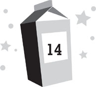

Lunar day 217
Afternoon
The last time I’d ventured onto the surface of the moon, I’d nearly died.
This was because Garth Grisan had been trying to kill me. He’d used the giant robot arm to try to swat me like a bug. In the process, the glass of my own visor had cracked, and I’d come within seconds of suffocating. The thought of going back out again had terrified me ever since. For the first few nights after my near-death experience, I’d had panic dreams where I was back on the surface, racing for safety while my air ran out, after which I’d wake screaming for help in a cold sweat. The dreams had subsided since then, but I still had them every once in a while.
My mother’s life was in danger, though. So I did my best to put aside my fears, grabbed the helmet repair kit, found Kira, suited up, and headed back onto the surface.
“Can I drive?” Kira asked. Her voice came over my radio headset as we trudged toward the rover garage.
“Do you know how?” I asked. I was doing my best to remain calm, to focus on my breathing and not panic.
“Would I be asking if I didn’t know how? Of course I can drive.”
I glanced toward her, wondering if this was true. Since self-driving cars had come along, young people didn’t need to take driving lessons. It was rare to see a car on earth that even had a steering wheel anymore. And even if that hadn’t been the case, Kira was still only twelve. “Where’d you learn?”
“My cousins have some old ATVs on their farm. I’ve driven them before, over all kinds of terrain.”
“Okay,” I agreed. “Sure, you can drive.”
I was glad Chang had insisted I bring Kira along with me. Even though she’d been out on the surface with me during the robot attack, she didn’t seem to be suffering from any bad memories of it. (Then again, I’d been the one who’d almost died.) In fact, she was thrilled to be out on the surface again, freed from the confines of MBA. She was bounding along, humming cheerfully over the headset, and her high spirits lifted mine.
The sun was out, making the lunar surface glow brightly. Meanwhile, since there was no atmosphere, the sky remained jet black above, save for the stars. It was all quite beautiful, and for a few moments, I found myself thinking how lucky I was to be one of the few people who’d ever experienced this in the entire history of mankind.
The rover garage wasn’t far from the main air lock, so it didn’t take us long to get to it. Or at least, what was left of it.
The garage had originally been a simple white dome, but when I’d been attacked, the robot arm had torn a gaping hole in the roof. Back on earth, the government probably could have repaired it within a few days, but on the moon, where getting new parts for anything required a rocket mission, it was probably going to be years until it was fixed. In the meantime, to make sure it didn’t collapse, Dad, Chang, and Dr. Balnikov had simply sliced off the top of the dome, making the whole thing look like an igloo with a sunroof.
The adults had left the garage door open when they’d taken the remaining big rovers out. Overlapping trails of moon dust led to and from the spots where the big rovers that still worked were normally parked. The wreckage of the third big rover—the one that had been destroyed by the robot—was to the side, where it could be cannibalized for spare parts. The small rover sat tucked in the back of the garage.
It was so spindly, it looked as though a kid had built it. The metal bars of the chassis were as thin as my fingers, and the motor seemed like a toy. The only part that looked sturdy was the wheels, which were quite large with extremely thick treads, designed to plow through moon dust and roll over sharp rocks.
Kira eagerly slid into the driver’s seat and flipped the ignition switch. The engine shuddered to life. “C’mon!” Kira exclaimed. “Let’s see how this thing handles!”
I buckled myself into the passenger seat. Kira immediately stomped her foot on the accelerator and let out a whoop. To her dismay, the little rover wasn’t nearly as powerful as she’d hoped. Instead of roaring across the lunar surface like a Formula One race car, it puttered along like an anemic golf cart.
“What the . . . ?” Kira asked. “How do I make this thing go faster?”
“I think this is as fast as it goes,” I told her. “Its maximum speed is eight miles an hour.”
“You’re kidding me.” Kira steered toward the launchpad. “My grandma can walk faster than this thing.”
I became aware of some movement out by the blast wall that surrounded the pad. Two of the four Moonies who’d stayed close to base to look for Nina were hurrying back toward the air lock, obviously concerned that their helmets might crack and explode at any moment.
I turned and spotted the other two adults rounding the side of the base, hurrying as well. Even though I couldn’t see their faces, I could sense their fear. The harsh reality of our mission settled on me.
Despite Kira’s annoyance over the rover’s speed, it was still much faster than walking would have been. It wasn’t long before we had cleared the launchpad and were venturing onto part of the moon I’d never laid eyes on before.
The lunar surface around Moon Base Alpha was scarred by human impact; virtually every bit of it was covered with human footprints or rover tracks, and there were piles of construction debris scattered about as well. But beyond the launchpad, most of the moon was still pristine. Except for the well-traveled road between the pad and the site of MBB—a makeshift highway of thousands of rover and robot tracks—everything still looked exactly as it had for the past hundred thousand years. There were wide seas of moon dust, a few islands of rock, and thousands of craters.
To our right, a great dune of moon dust rose, a beautiful pure white mountain two hundred feet tall. “Check that out,” I said. “It’s amazing, isn’t it?”
“Yeah,” Kira agreed. “I wish we could drive on it.”
I glanced back at her. “But then we’d ruin it forever.”
“So? It’s gonna get ruined sooner or later. We might as well be the ones to do it. If we were the first ones up it, I’ll bet we could name it after ourselves.”
“We could probably name it anyhow,” I pointed out.
“Mount Kiradash!” she exclaimed. “Aw, man, if this wasn’t an emergency, I’d drive right up there.”
“Look out!” I yelled.
Kira had been so busy looking at the mountain, she hadn’t noticed the other rover coming down the road. Dr. Balnikov, Dr. Merritt, Dr. Kim, and Dr. Alvarez were racing back to the safety of MBA before their helmets failed. Kira was steering toward them, while they were all waving at us desperately, signaling us to move to the right. Kira veered out of their way so quickly I almost got whiplash.
They slipped past us, barely missing us by inches, then jounced onward toward MBA.
“Oops,” Kira said.
“There’s only two other vehicles on the entire moon,” I pointed out. “And you almost hit one of them.”
“I wasn’t expecting there to be traffic,” Kira explained.
I made sure there wasn’t anyone else coming our way, then looked out over the endless expanse of moon. Roddy’s warning came back to me: that Nina could be almost anywhere out there, and if she was, she’d be almost impossible to see. I turned back toward MBA, to find it had already disappeared from sight behind Mount Kiradash.
“Do you think Nina would have really come all the way out here?” I asked. “By herself?”
“We’re not that far,” Kira replied. “This stupid rover is so slow, I’ll bet we haven’t even gone a mile.”
“But still, we’re in a rover. It doesn’t seem like Nina to come this far from the base alone on foot. It’s too dangerous.”
“Leaving the base at all doesn’t seem like Nina,” Kira told me. “Neither does stealing moon rocks. But obviously, none of us knew her as well as we thought. Everyone’s been thinking she’s the ultimate goody two-shoes and it turns out she’s had this secret criminal life going on the whole time.”
I sighed. “Well, at least now we know she wasn’t murdered.”
“Not necessarily. Murder’s still totally possible. Maybe someone found out Nina was smuggling rocks and wanted in on it. Then Nina said no and things got out of control.”
“You think she was killed because of some rocks?”
“They’re supposed to be worth millions, right? People have killed each other for a lot less.”
I stared out at the lunar surface, thinking about that. Once again, Kira was right: The fact that Nina was up to something secret didn’t mean someone couldn’t have murdered her. Or at least, tried to murder her. Zan had said she wasn’t dead, but that was hours before. I wondered how much worse Nina’s condition had grown since then. I wondered where Nina could be, period. There didn’t appear to be any sign of her on the surface. But then, if Nina had been buried even a few feet off the track, I never would have seen her.
“So who’s your number one suspect?” I asked.
“The Sjobergs,” Kira replied.
“The Sjobergs? They don’t need a couple million dollars! They’ve got billions.”
“Maybe not. Maybe they blew all their money on stupid stuff like vacations on the moon. And now they’re bankrupt and desperate. Those people are used to being rich. They wouldn’t do well having to live like the rest of us, without solid-gold bathtubs and refrigerators full of caviar and pet snow leopards and stuff.”
“A few million wouldn’t be able to support that kind of life for them.”
“It’d still be something. And if anyone on our base is depraved enough to kill for money, it’s that family. Who knows? Maybe they’re not bankrupt but they’re still willing to sink this low to get more money because that’s simply the kind of monsters they are.”
“I don’t know about that. . . .”
“Well, whatever the case, you have to admit they’ve been acting awfully suspicious lately.”
“Yeah,” I agreed, thinking of the long periods they were spending in their room and whatever Roddy had witnessed them doing the night before. “They’re definitely up to something.”
“Look,” Kira said, pointing ahead of us. “There’s the Moon Base Beta site.”
It was still a good distance away from us, and it didn’t look like much yet: only a few surveyor lines staked into the moon dust. MBB was going to be several times larger than MBA, but the footprint still looked awfully small compared to the amount of empty space surrounding it. Twelve space capsules were scattered about the area, each the size of a one-car garage. I couldn’t tell which was the one that had come that morning, as they all looked exactly alike. None had been unloaded yet; that wouldn’t happen until it was time for construction to begin.
I couldn’t see the operations pod, though, as it had been built underground to protect it from meteorite impacts. It was inside a lava tube, an enormous natural tunnel of basalt that was a remnant from billions of years ago, when the moon’s surface had been molten rock. The tubes had formed when the lava hardened, and they were like subway tunnels beneath the moon dust. They were pretty rare; this area was one of the few places on the moon they existed. In fact, the tubes were one of the main reasons for selecting the sites for both moon bases; the operations pods weren’t sturdy enough to leave exposed on the lunar surface.
I noticed the lunar rover my parents, Chang, and Dr. Howard had taken, off to the side of the MBB site. It was parked by a dark slash of rock, the top of a lava tube, poking through the dust.
I pointed to it. “That must be where the pod is.”
And then, far to my right, there was a sudden movement.
It happened quickly, at the edge of my peripheral vision. By the time I turned that way, whatever it was had vanished.
“What’s wrong?” Kira asked.
“I thought I saw something,” I said.
“Like Nina?”
“I don’t know. Stop the rover.”
Kira nailed the brakes. Even though we weren’t moving all that fast, we still skidded a bit in the moon dust.
I scanned the horizon to the right, looking for more movement, hoping to spot Nina out there, alive and well. But I saw nothing.
Then, near the MBB site, there was a small puff of white. A tiny cloud of moon dust had been thrown into the air. Because of the moon’s weak gravity, it drifted for a while before settling back to the surface. It looked kind of like the plume of spray a humpback whale made when it spouted.
“There!” I said, pointing.
“I saw it,” Kira responded.
Another puff rose, much closer to us, off to our left.
Fear seized me as I realized what it was.
“Meteorites!” I yelled.
They were plummeting to the ground around us. Stray bits of rock that had been floating through space. Given the size of the impacts, they were certainly quite small, no bigger than pebbles. On earth, they would have burned up in the atmosphere. But on the moon, there was no atmosphere to slow them. They streaked into the surface at rocket speed, hard enough to crater the ground.
Fast enough to go straight through our space suits and kill us.
Another two puffs of dust arose, one on either side of us. More meteorites had plowed into the lunar surface. And no doubt more were coming.
We were out in the open in the middle of a meteorite shower and there was nothing to protect us.
Which meant our lives were in very serious danger.